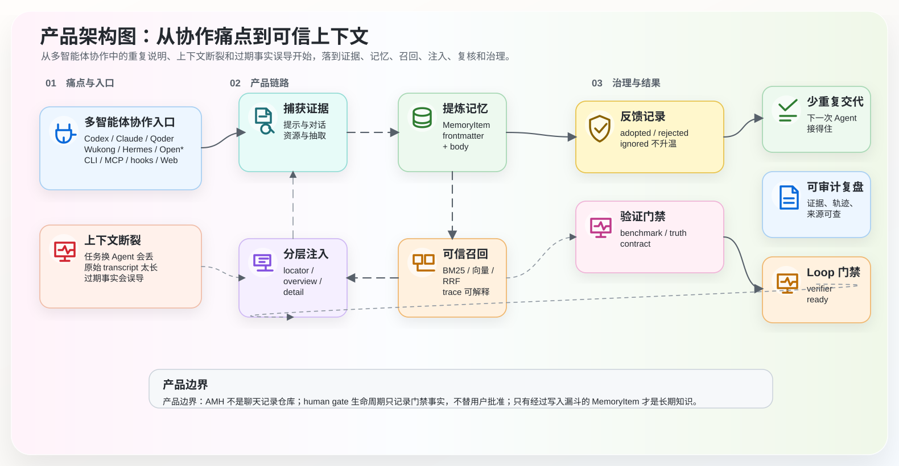
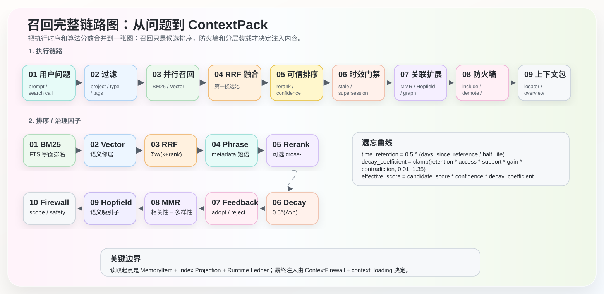
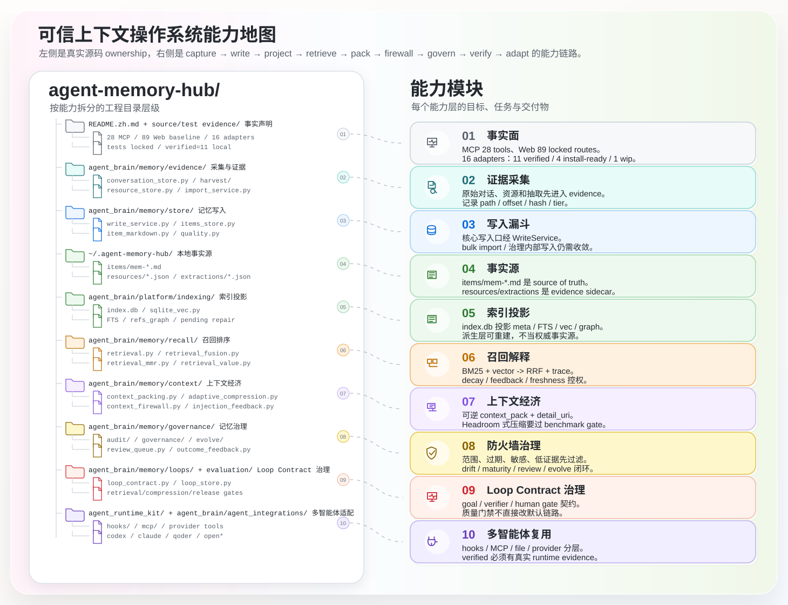
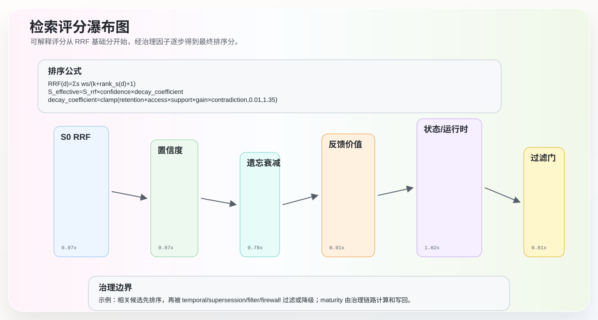

让每一次智能协作，都沉淀为下一次出发。
一个本地优先、可追溯、可治理的跨智能体可信上下文操作系统。 给 Claude Code、Codex CLI、Cursor、Hermes、Qoder、Wukong、GitHub Copilot 和任何支持 MCP / CLI / hooks 的智能体工具共用。
English | 战略 | 路线图 | 架构图谱 | 架构说明

这个 HTML 页面按 README 中文预览的首屏和排版节奏展示可编辑 SVG 图谱；图谱源文件仍在 docs/visuals/ 下维护。
| 事实 | 证据/对象 | 图中表达边界 |
|---|---|---|
| 接口能力面 | MCP 28 tools、Web API/WS 89 locked routes |
Web route surface lock 包含 Cockpit、data-flow、memory-lineage、adapter onboarding、memory candidates、Headroom/CCR、compression gate 和 ML/DL advisory gate。 |
| 写入与证据边界 | WriteService + ResourceStore |
MemoryItem 走写漏斗；conversation/resource/extraction 是证据旁路，不能画成默认注入事实。 |
| 候选记忆链路 | review/proactive-candidates.jsonl |
generate 只建候选；approve 经 WriteService 写入；reject 只更新 review sidecar。 |
| 适配器真实性 | 16 adapters / 11 verified / 4 install-ready / 1 wip |
Claude Code、OpenClaw、Qoder、Wukong 仍为 install-ready；QoderWork 已有 GUI context-effective 证据；MuleRun 仍为 wip。 |
| 检索与上下文经济 | retrieval trace、context_pack、Headroom/CCR、context firewall |
压缩和 ML/DL advisory 都走门禁或旁路，不能直接改默认注入链路。 |
| 序号 | 图谱 | 源文件 | 画布 |
|---|---|---|---|
| 00 | AMH 可信上下文生命周期图：接入、维护、召回、治理与评估 | amh-loop-layered-architecture.zh.svg | 1500 / 880 |
| 01 | AMH 总控图：可信上下文操作回路 | amh-operating-loop.zh.svg | 1500 / 980 |
| 02 | 产品架构图：从协作痛点到可信上下文 | product-architecture.zh.svg | 1500 / 820 |
| 03 | 技术架构图：接入、运行时、脑内核与本地数据 | technical-architecture.zh.svg | 1280 / 950 |
| 04 | 维护 + 召回一体时序链路图 | memory-lifecycle-sequence.zh.svg | 1500 / 820 |
| 05 | 数据链路图：Evidence 到 ContextPack | data-flow.zh.svg | 1500 / 860 |
| 06 | 召回完整链路图：从问题到 ContextPack | retrieval-complete-flow.zh.svg | 1560 / 760 |
| 07 | 可信上下文操作系统能力地图 | readme-structure-map.zh.svg | 1460 / 1120 |
| 08 | 检索评分公式 | retrieval-score-waterfall.zh.svg | 1280 / 760 |
| 09 | 智能体接入边界 | amh-adapter-capability-boundary.zh.svg | 1180 / 900 |
amh-loop-layered-architecture.zh.svg · 1500 / 880

amh-operating-loop.zh.svg · 1500 / 980

product-architecture.zh.svg · 1500 / 820

technical-architecture.zh.svg · 1280 / 950

memory-lifecycle-sequence.zh.svg · 1500 / 820

data-flow.zh.svg · 1500 / 860

retrieval-complete-flow.zh.svg · 1560 / 760

readme-structure-map.zh.svg · 1460 / 1120

retrieval-score-waterfall.zh.svg · 1280 / 760

amh-adapter-capability-boundary.zh.svg · 1180 / 900

resources/ 与 extractions/ 是已实现 sidecar store；图中表达 storage 能力，不用旧样例数量充当当前事实。refs.commits 只表达 schema/governance provenance，不表达自动维护能力。{kind=link}
{kind=link}
{kind=link}
{kind=link}